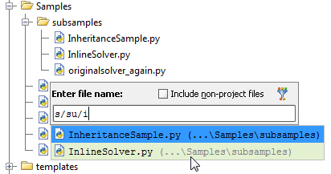

You can jump directly to any deeply buried file, if you press &shortcut:GotoFile;, and type just a couple of characters of the enclosing directories and file names:

Use either a slash or a backslash as a delimiter.